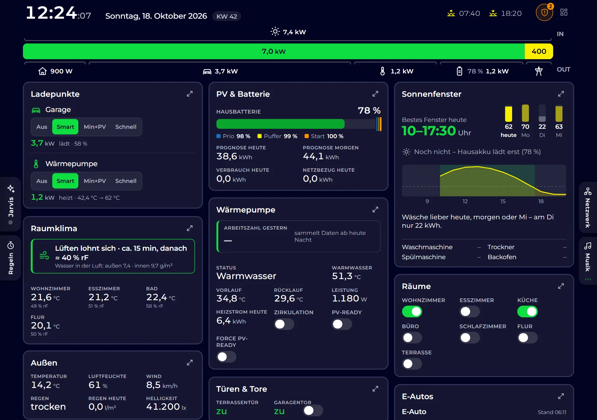

Excel- und Papierprozesse ablösen
Daten werden automatisch importiert, nach Regeln zugeordnet und ausgewertet – statt mühsam abgetippt und von Hand sortiert. Weniger Fehler, mehr Zeit für das Wesentliche.
Zu viel Handarbeit in Excel, eine Branchensoftware, die nicht mehr passt, oder neue Pflichten wie die E-Rechnung? Das Ingenieurbüro Michael Pröpster entwickelt maßgeschneiderte Lösungen, die genau zu Ihren Abläufen passen – verständlich erklärt, sauber umgesetzt und langfristig betreut.
Ob kleines Werkzeug für einen einzelnen Arbeitsschritt oder die Ablösung eines gewachsenen Systems – im Mittelpunkt steht immer der konkrete Nutzen für Ihren Arbeitsalltag.
Daten werden automatisch importiert, nach Regeln zugeordnet und ausgewertet – statt mühsam abgetippt und von Hand sortiert. Weniger Fehler, mehr Zeit für das Wesentliche.
Rechnungen im Format XRechnung oder ZUGFeRD erstellen und empfangen – passend zu Ihren bisherigen Vorlagen und Abläufen, ohne teure Komplettumstellung.
Bewährte, aber in die Jahre gekommene Software wird analysiert, dokumentiert und schrittweise auf eine moderne, wartbare Plattform übertragen – Ihr Fachwissen bleibt erhalten.
Ein Login für alle Anwendungen, sicherer Zugang für Mitarbeitende, Kunden und Partner – auf Basis etablierter Standards und der Microsoft-Cloud.
Anwendungen, die im Browser auf PC, Tablet und Smartphone laufen – ohne Installation, immer auf dem aktuellen Stand.
Software, die sich mit Ihrer Hilfe selbst weiterentwickelt: Wünsche direkt in der Anwendung äußern – die KI prüft, setzt um und liefert aus, sobald Sie zustimmen.
Gut zu wissen: Seit 2025 müssen Unternehmen E-Rechnungen empfangen können. Ab 2027 müssen größere Betriebe ihre Rechnungen auch als E-Rechnung ausstellen, ab 2028 alle. Ein früher Umstieg erspart Hektik zum Stichtag.
Azure AD B2C wird an Neukunden nicht mehr verkauft, und der Nachfolger deckt nicht alles ab, was Custom Policies möglich gemacht haben. TheIdP ist ein Identity Provider für Unternehmen, der dort weitermacht, wo B2C aufhört – vertraut für Ihre Anwendungen, erweitert, wo B2C schon immer zu eng war, und betrieben, wo Sie es möchten.
In Entwicklung · Pilotkunden willkommenLogin-Flows werden wie B2C-Policies über die Authority-URL gewählt, die Claims sind B2C-kompatibel, App-Registrierungen funktionieren wie in Entra ID. Für die meisten Anwendungen ist der Wechsel eine neue Authority – kein neues Projekt.
Eine API tauscht das eingehende Benutzer-Token gegen ein Token für die nächste API – nur zwischen freigegebenen Paaren, die komplette Aufrufkette steht im Token. Was B2C nie konnte, ist eingebaut.
Geschäftskunden melden sich mit ihrem eigenen Entra ID oder einem beliebigen OIDC-Anbieter an – automatisch über die E-Mail-Domain gefunden und sicher verknüpft. Endkunden nutzen lokale Konten mit Passkeys, Authenticator-App oder E-Mail-Code.
Login-Flows sind echter Code statt Custom-Policy-XML – versioniert, getestet und ausgeliefert wie jede Software. Branding und Kampagnen, Übersetzungen, E-Mail-Vorlagen und Claim-Mappings pflegen Sie in der Konsole; Erweiterungspunkte erlauben Betrugsprüfungen oder Step-up-Regeln.
Betreiben Sie ihn selbst – im eigenen Rechenzentrum oder in jeder Cloud. Ein zweiter Standort, auch bei einem anderen Cloud-Anbieter, bleibt synchron; umgeschaltet wird per DNS und einem Klick, die Benutzer arbeiten weiter.
Berechtigte Mitarbeitende melden sich im Namen eines Kundenbenutzers bei einer Anwendung an – nur wo erlaubt, zeitlich begrenzt, im Token klar gekennzeichnet und lückenlos protokolliert.
„Warum konnte sich jane.doe@kunde.example heute früh nicht anmelden?“
Sie wurde zur Anmeldung ihres Unternehmens geleitet (erkannt an der E-Mail-Domain). Der
Identity Provider des Kunden meldete um 08:14 einen Fehler – Reason Code FEDERATION_ERROR. Der
Health-Check zeigt seit gestern ein abgelaufenes Zertifikat. Nächster Schritt: die IT des Kunden um Erneuerung
bitten; ein Testlink für sie liegt bereit.
Eingebauter MCP-Server: Der Support fragt in Alltagssprache aus einem KI-Assistenten wie Claude – nur lesend, beschränkt auf die eigene Rolle, jeder Aufruf protokolliert.
Steht bei Ihnen eine B2C-Migration an? Gerne zeigen wir Ihnen TheIdP in einer Live-Demo und wir prüfen gemeinsam, ob er zu Ihren Anwendungen passt – sprechen Sie uns an.
Klassische Software bleibt stehen, sobald das Projekt abgeschlossen ist. Mit KI lässt sich ein Kreislauf aufbauen, in dem Ihre Anwendung laufend besser wird – angestoßen von den Menschen, die täglich damit arbeiten.
Fehler oder Idee direkt in der Anwendung melden – per Klick, Formular oder im Gespräch mit dem eingebauten KI-Assistenten.
Die KI bewertet Machbarkeit, Aufwand und Risiken und stellt bei Unklarheiten gezielt Rückfragen.
Nichts passiert ohne Freigabe: Sie geben den Vorschlag frei, ergänzen ihn oder verwerfen ihn.
Die Änderung wird programmiert und durch automatisierte Tests abgesichert – nur was alle Prüfungen besteht, kommt weiter.
Die verbesserte Version wird automatisch ausgeliefert. Sie probieren sie aus – und der Kreislauf beginnt von vorn.
Ein Assistent, der Ihre Daten kennt, beantwortet Fragen in normaler Sprache: „Wie hoch war die Umsatzsteuer im letzten Quartal?“ oder „Wann lohnt es sich heute, die Waschmaschine zu starten?“. Dazu kommen klassische Automatisierungen: Schnittstellen zwischen Programmen, angebundene Geräte und Regeln, die Routinearbeit übernehmen.
Bereits im Einsatz: Das Haus-Dashboard weiter unten entwickelt sich genau so weiter – Wünsche gehen per Sprachassistent ein, die KI setzt sie um, und nach der Freigabe läuft die neue Version.
Klare Schritte, sichtbare Fortschritte und keine Überraschungen bei Umfang und Kosten.
Im kostenlosen Erstgespräch schildern Sie Ihre Situation. Gemeinsam wird geklärt, wo der größte Hebel liegt.
Sie erhalten einen verständlichen Lösungsvorschlag mit transparentem Angebot – ohne Fachchinesisch.
Nach jeder Etappe gibt es einen lauffähigen Zwischenstand. Sie testen früh und steuern jederzeit mit.
Einführung, Dokumentation und Unterstützung im Betrieb – auch wenn später Anpassungen nötig werden.
Als inhabergeführtes Ingenieurbüro aus Schwarzach bei Nürnberg verbindet IMP langjährige Erfahrung in der professionellen Softwareentwicklung mit kurzen Wegen und persönlicher Betreuung – für Unternehmen wie für Privatkunden.
Photovoltaik, Batteriespeicher, Wallbox und Wärmepumpe sind installiert – aber arbeiten sie auch zusammen? Ein durchdachtes Energiemanagement sorgt dafür, dass möglichst viel eigener Strom im eigenen Haus bleibt. Und mit einer passenden Heimautomatisierung haben Sie alles auf einen Blick.

Ein kurzer Anruf oder eine E-Mail genügt. Das Erstgespräch ist kostenlos und unverbindlich – auch wenn die Idee noch ganz am Anfang steht.